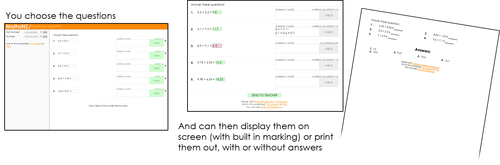

MathsNZ Question Generator
MathsNZ Question Generator is designed to make creating questions for students to practice with quick and easy.
You can create worksheets by going to the creator page and then worksheets can be displayed on screen or in a format that can be printed out easily.

You can also sign up to enable students to email you their completed worksheets. Sign up here.